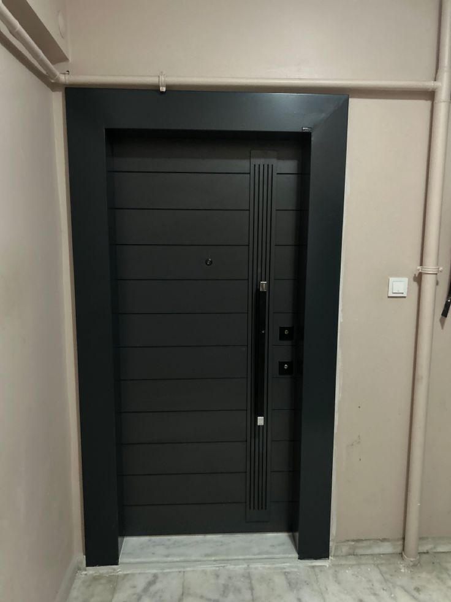
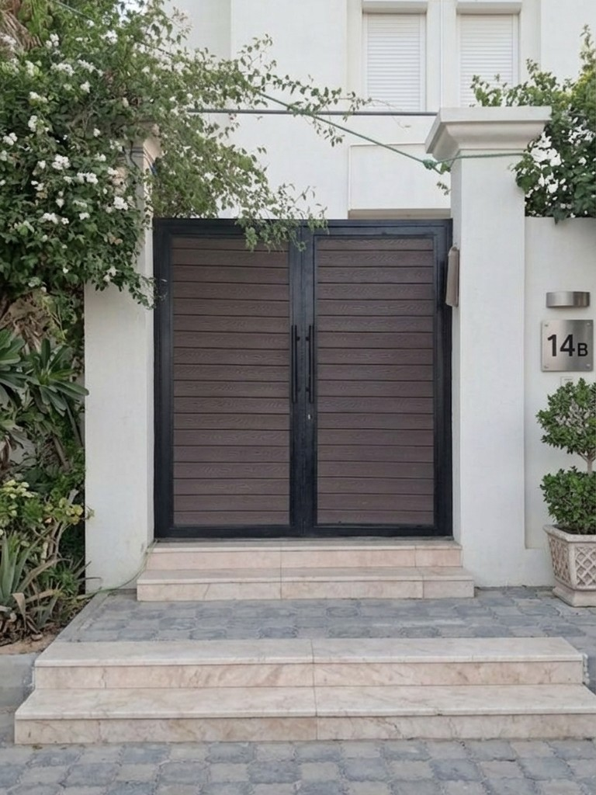
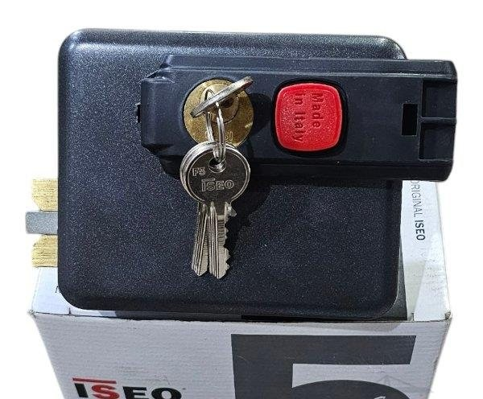
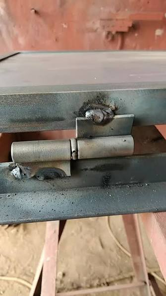
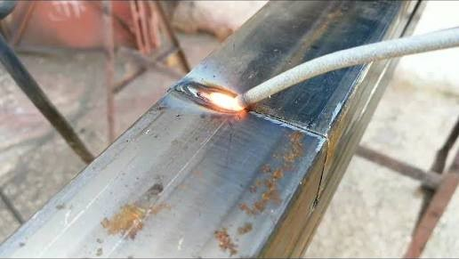
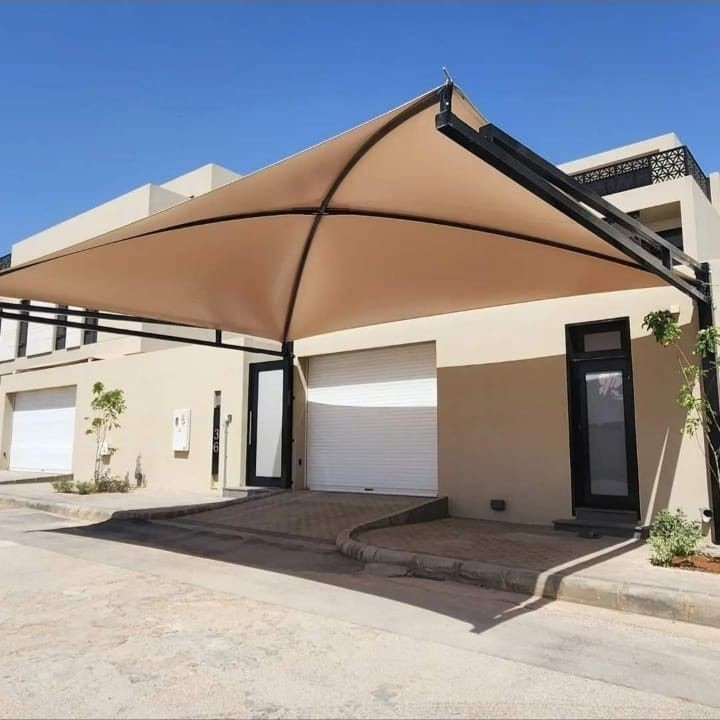
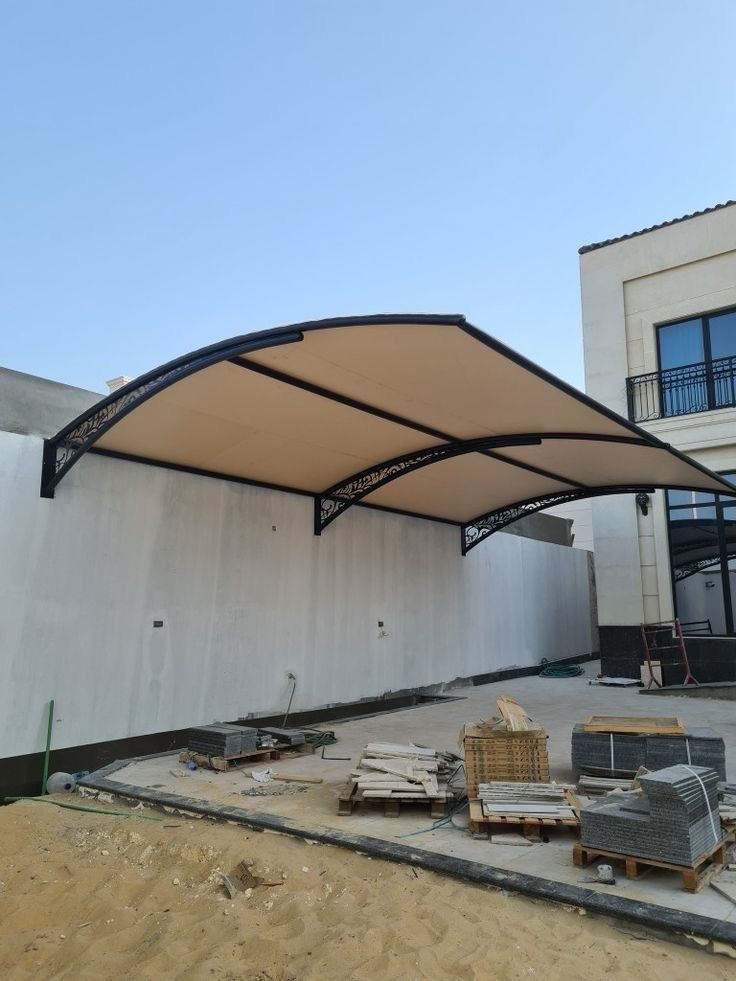
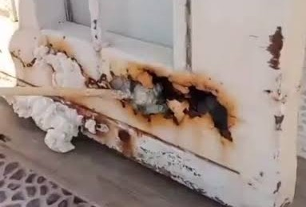
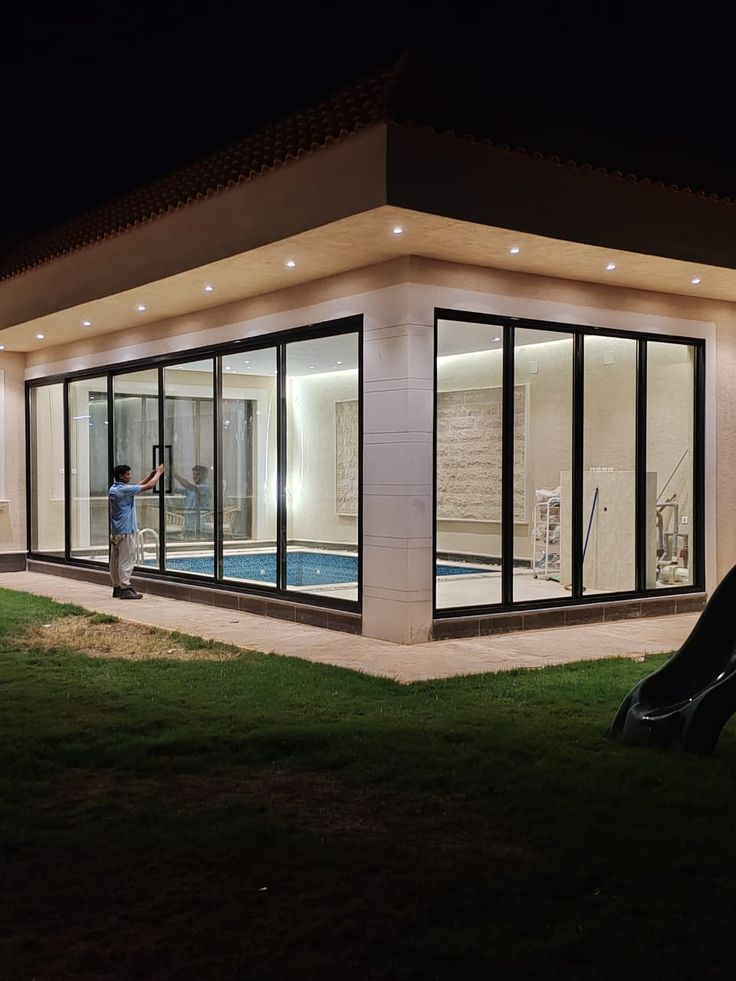
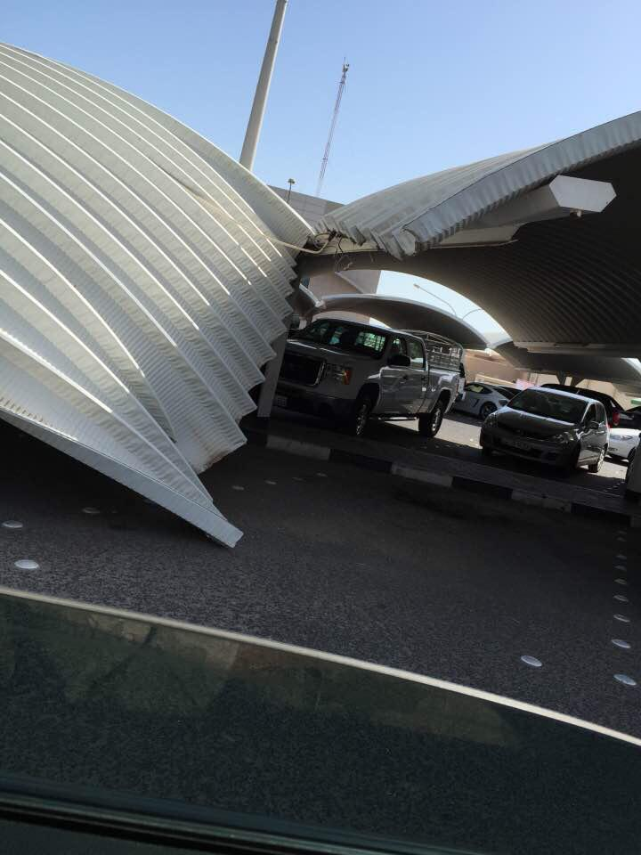

خدمات صيانة فورية في الرياض. فك وتركيب ابواب وشبابيك ومظلات. تغيير مغالق ومفصلات + تلحيم + معالجة. نجيك لحد عندك وضمان على الصيانة.

خدمة فك وتركيب جميع انواع الابواب. نقل الباب من مكان لمكان. تركيب باب جديد مكان القديم. مع ضبط وتوزين 100%.

نرجع لبابك القديم رونقه من جديد نقوم بتجديد الأبواب الخشبية والحديدية القديمة عن طريق تلبيسها بتكسيات بديل الخشب WPC بأحدث التقنيات وبأيدي فنيين متخصصين، تكسيات الـ WPC تتميز بأنها مقاومة للخدش والماء والرطوبة والحشرات ولا تتأثر بأشعة الشمس أو تغيرات الجو، مما يجعلها الحل المثالي للأبواب الداخلية والخارجية. .

تغيير وصيانة مغالق الابواب والشبابيك. تركيب كوالين ذكية وبصمة. فتح الابواب المغلقة بدون تكسير. جميع الماركات متوفرة.

تغيير مفصلات الابواب الحديد والخشب والالمنيوم. معالجة الباب الساقط. تلحيم المفصلات المكسورة. تركيب مفصلات قوية.

خدمة لحام وتلحيم الابواب والشبابيك والمظلات والشبوك. لحام ارجون وكهرباء. معالجة الكسور والشروخ. دهان بعد اللحام.

صيانة المظلات القماش والحديد واللكسان. تغيير القماش المقطوع. تلحيم الهيكل. شد البراغي. عزل من تسريب الماء.

فك المظلات القديمة ونقلها وتركيبها في مكان جديد. تركيب مظلات مستعملة. تعديل المقاسات. تركيب سريع وآمن.

سنفرة ومعالجة الصدأ في الابواب والشبابيك والمظلات. دهان برايمر + دهان نهائي. ارجاع القطعة جديدة.

تغيير زجاج الواجهات المكسور. صيانة السيليكون. تثبيت الواح زجاج ساقطة. تنظيف وتلميع الواجهات.

خدمة صيانة طارئة. باب معلق؟ قفل خربان؟ مظلة طاحت؟ نوصلك خلال ساعة. خدمة 24 ساعة في الرياض.<
نرجع منشأتك جديدة بأقل تكلفة وأعلى جودة
نحن في شركتنا متخصصون في تقديم حلول صيانة وترميم متكاملة للمنشآت المعدنية في الرياض وجميع مناطق المملكة العربية السعودية. ندرك أن الصيانة الدورية هي المفتاح لإطالة عمر الهياكل وضمان سلامتها ومظهرها.
فريقنا الفني يمتلك خبرة تتجاوز 10 سنوات في التعامل مع جميع أنواع التلفيات التي قد تتعرض لها الهناجر والمظلات والشبوك. نستخدم أحدث الأدوات والمعدات ونلتزم بأعلى معايير الجودة والسلامة في كل مشروع.
هدفنا هو مساعدتك في الحفاظ على استثمارك من خلال صيانة وقائية تمنع الأعطال الكبيرة، أو ترميم شامل يعيد منشأتك لحالتها الأصلية. نقدم لك تقرير مفصل عن حالة الموقع قبل البدء، مع تكلفة واضحة وبدون أي رسوم خفية.
فريق فني متخصص ومدرب • استجابة طارئة خلال 24 ساعة • فحص مجاني للموقع • استخدام مواد أصلية معتمدة • ضمان 5 سنوات على أعمال الصيانة • أسعار منافسة وعروض خاصة